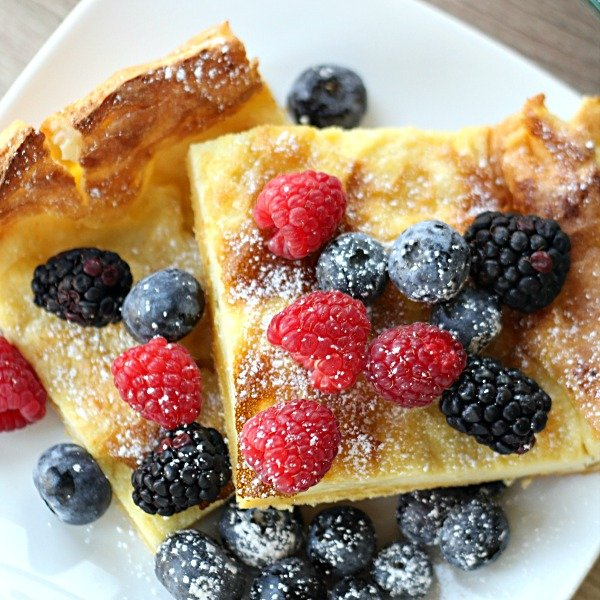

German Pancakes

Description
German pancakes have been a family recipe passed down through many generations. They are a dense egg and flour based breakfast item that is usually topped with powdered surgar and/or maple syrup and any choice of fruit, my favorite are strawberries and bananas with a sprinkle of powdered sugar. With a small prep-time and only needing 20 minutes to cook, this recipe is great for a decently quick family breakfast. The edges have a nice fluffy and crisp texture while the middle has a soft egg-like feel.
4-6 Servings
Ingredients
- 6 eggs
- 1 cup all-purpose flour
- 1 cup milk
- 1 tsp vanilla
- 1/2 tsp salt
- 1 stick butter
Steps
- Preheat oven to 400℉.
- While oven is preheating, put the stick of butter into a 12"x9" metal or glass pan and into the oven to melt (make sure to not let the butter burn, check often and remove from oven if fully melted and oven is not done preheating).
- Mix all ingredients in a large mixing bowl and whisk until smooth.
- Pour smooth mixture over the evenly distributed melted butter and place the pan in the oven if done preheating.
- Remove after 20 minutes and cut into 6 sections.
- Serve and top with desired fruit, powdered sugar and/or syrup.
- Dig in and enjoy!
Back to Recipe List